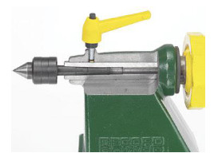
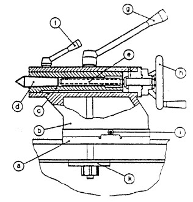
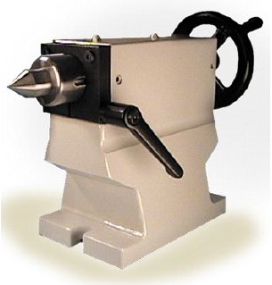

2. Kepala Lepas
Activity

http://www.recordpower.co.uk/assets/products/product_images/prod_000206_feature_0_1330600928.jpg
Gambar 12 Bagian dalam kepala lepas
Kepala lepas adalah bagian dari mesin bubut yang letaknya di sebelah kanan dan dipasang di atas alas atau meja mesin. Bagian ini berguna untuk tempat untuk pemasangan senter yang digunakan sebagai penumpu ujung benda kerja dan sebagai tempat/dudukan penjepit mata bor pada saat melakukan pengeboran. Kepala lepas ini dapat digerakkan atau digeser sepanjang alas/meja mesin, dan dikencangkan dengan perantara mur dan baut atau dengan tuas pengencang. Selain digeser sepanjang alas atau meja mesin, kepala lepas juga dapat digerakan maju mundur (arah melintang), yakni untuk keperluan pembubutan benda yang konis.

Gambar 13 Bagian Kepala Lepas

http://www.troyke.com/images/tailstocks.png
Gambar 14 Kepala Lepas
Dalam pembubutan antara 2 senter, kepala lepas berfungsi sebagai pemanjang ujung, dan untuk menempatkan/ memegang perkakas (mata bor, mata remer dsb). Dapat bergeser pada arah memanjang diatas bangku mesin bubut dan dapat dijepit dengan kuat dengan tuas jepit (g) dan pelat jepit (k) pada setiap tempat kedudukan yang dikehendaki.
Kepala lepas terdiri atas :
- Bagian bawah (a)
- Bagian atas (b)
Bila membubut benda kerja yang berbentuk silinder, senter-senter kepala tetap dan kepala lepas harus tepat “segaris”. Dalam mengatur mesin untuk membubut silinder dan tirus, bagian atas sampai bagian bawah dapat digeser melintang terhadap sumbu putar dengan sekerup (l). Pada bagian atas terdapat “pinole (C)”, yang dengan bantuan “roda tangan (h)” dan “spindel (e)” dapat digeser dalam arah memanjang. (gerakan pemakanan pada pemboran, peremeran dsb.) “Pucuk senter (d)” atau perkakas dipasang dalam pinole (c) dengan “tirus morse”. Bila membubut antara 2 senter pinole (c) dikencangkan dengan “tuas pengencang (f)”.